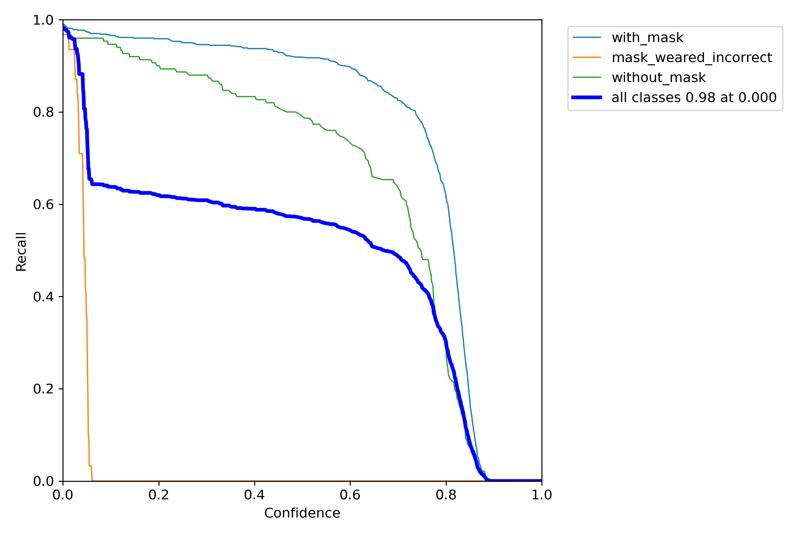
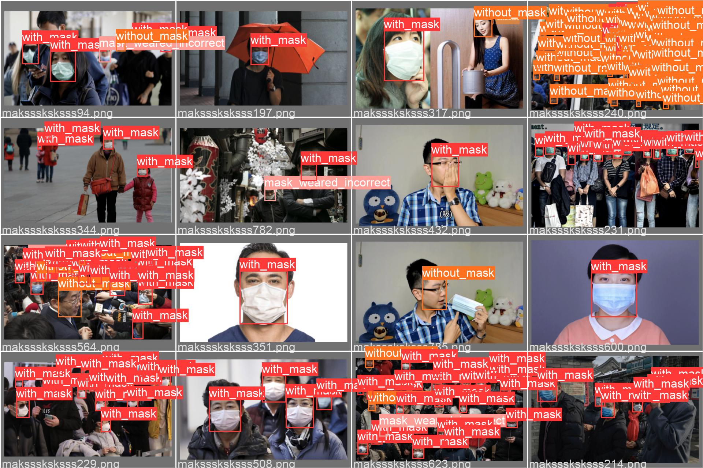

模型训练
内容
模型训练¶
备注
可以使用 Weights & Biases 可视化训练过程。
import sys
from pathlib import Path
ROOT = Path('yolov5/') # YOLOv5 根目录
if str(ROOT) not in sys.path:
sys.path.append(ROOT.as_posix())
import torch
model_name = 'yolov5m'
image_size = 640
batch_size = 16
epochs = 20
device = 0 if torch.cuda.is_available() else 'cpu'
saved_model_name = 'best.pt'
device
0
!python yolov5/train.py --weights yolov5m.pt \
--cfg yolov5/models/yolov5m.yaml --data datasets/face_mask.yaml \
--hyp yolov5/data/hyps/hyp.scratch.yaml --epochs 20 --batch-size 16 \
--img-size 640 --device 0
train: weights=yolov5m.pt, cfg=yolov5/models/yolov5m.yaml, data=datasets/face_mask.yaml, hyp=yolov5/data/hyps/hyp.scratch.yaml, epochs=20, batch_size=16, imgsz=640, rect=False, resume=False, nosave=False, noval=False, noautoanchor=False, evolve=None, bucket=, cache=None, image_weights=False, device=0, multi_scale=False, single_cls=False, optimizer=SGD, sync_bn=False, workers=8, project=yolov5/runs/train, name=exp, exist_ok=False, quad=False, linear_lr=False, label_smoothing=0.0, patience=100, freeze=[0], save_period=-1, local_rank=-1, entity=None, upload_dataset=False, bbox_interval=-1, artifact_alias=latest
github: up to date with https://github.com.cnpmjs.org/ultralytics/yolov5 ✅
YOLOv5 üöÄ v6.0-192-g436ffc4 torch 1.10.1 CUDA:0 (NVIDIA GeForce RTX 2080 Ti, 11017MiB)
hyperparameters: lr0=0.01, lrf=0.1, momentum=0.937, weight_decay=0.0005, warmup_epochs=3.0, warmup_momentum=0.8, warmup_bias_lr=0.1, box=0.05, cls=0.5, cls_pw=1.0, obj=1.0, obj_pw=1.0, iou_t=0.2, anchor_t=4.0, fl_gamma=0.0, hsv_h=0.015, hsv_s=0.7, hsv_v=0.4, degrees=0.0, translate=0.1, scale=0.5, shear=0.0, perspective=0.0, flipud=0.0, fliplr=0.5, mosaic=1.0, mixup=0.0, copy_paste=0.0
Weights & Biases: run 'pip install wandb' to automatically track and visualize YOLOv5 üöÄ runs (RECOMMENDED)
TensorBoard: Start with 'tensorboard --logdir yolov5/runs/train', view at http://localhost:6006/
Overriding model.yaml nc=80 with nc=3
from n params module arguments
0 -1 1 5280 models.common.Conv [3, 48, 6, 2, 2]
1 -1 1 41664 models.common.Conv [48, 96, 3, 2]
2 -1 2 65280 models.common.C3 [96, 96, 2]
3 -1 1 166272 models.common.Conv [96, 192, 3, 2]
4 -1 4 444672 models.common.C3 [192, 192, 4]
5 -1 1 664320 models.common.Conv [192, 384, 3, 2]
6 -1 6 2512896 models.common.C3 [384, 384, 6]
7 -1 1 2655744 models.common.Conv [384, 768, 3, 2]
8 -1 2 4134912 models.common.C3 [768, 768, 2]
9 -1 1 1476864 models.common.SPPF [768, 768, 5]
10 -1 1 295680 models.common.Conv [768, 384, 1, 1]
11 -1 1 0 torch.nn.modules.upsampling.Upsample [None, 2, 'nearest']
12 [-1, 6] 1 0 models.common.Concat [1]
13 -1 2 1182720 models.common.C3 [768, 384, 2, False]
14 -1 1 74112 models.common.Conv [384, 192, 1, 1]
15 -1 1 0 torch.nn.modules.upsampling.Upsample [None, 2, 'nearest']
16 [-1, 4] 1 0 models.common.Concat [1]
17 -1 2 296448 models.common.C3 [384, 192, 2, False]
18 -1 1 332160 models.common.Conv [192, 192, 3, 2]
19 [-1, 14] 1 0 models.common.Concat [1]
20 -1 2 1035264 models.common.C3 [384, 384, 2, False]
21 -1 1 1327872 models.common.Conv [384, 384, 3, 2]
22 [-1, 10] 1 0 models.common.Concat [1]
23 -1 2 4134912 models.common.C3 [768, 768, 2, False]
24 [17, 20, 23] 1 32328 models.yolo.Detect [3, [[10, 13, 16, 30, 33, 23], [30, 61, 62, 45, 59, 119], [116, 90, 156, 198, 373, 326]], [192, 384, 768]]
Model Summary: 369 layers, 20879400 parameters, 20879400 gradients, 48.1 GFLOPs
Transferred 474/481 items from yolov5m.pt
Scaled weight_decay = 0.0005
optimizer: SGD with parameter groups 79 weight, 82 weight (no decay), 82 bias
train: Scanning '/home/znjs/xinet/ai/pytorch-book/docs/yolo/face-mask/datasets/l
val: Scanning '/home/znjs/xinet/ai/pytorch-book/docs/yolo/face-mask/datasets/lab
Plotting labels to yolov5/runs/train/exp3/labels.jpg...
AutoAnchor: 5.62 anchors/target, 0.999 Best Possible Recall (BPR). Current anchors are a good fit to dataset ✅
Image sizes 640 train, 640 val
Using 8 dataloader workers
Logging results to yolov5/runs/train/exp3
Starting training for 20 epochs...
Epoch gpu_mem box obj cls labels img_size
0/19 6.35G 0.1114 0.0574 0.03781 60 640: 100%|███
Class Images Labels P R mAP@.5 mAP@
all 166 884 0.00842 0.0223 0.0027 0.000527
Epoch gpu_mem box obj cls labels img_size
1/19 7.9G 0.09343 0.06483 0.02785 97 640: 100%|███
Class Images Labels P R mAP@.5 mAP@
all 166 884 0.711 0.0986 0.0349 0.00733
Epoch gpu_mem box obj cls labels img_size
2/19 7.9G 0.07669 0.05572 0.02183 77 640: 100%|███
Class Images Labels P R mAP@.5 mAP@
all 166 884 0.818 0.17 0.16 0.047
Epoch gpu_mem box obj cls labels img_size
3/19 7.9G 0.0673 0.04677 0.01904 68 640: 100%|███
Class Images Labels P R mAP@.5 mAP@
all 166 884 0.794 0.207 0.157 0.0457
Epoch gpu_mem box obj cls labels img_size
4/19 7.9G 0.07019 0.0433 0.01816 128 640: 100%|███
Class Images Labels P R mAP@.5 mAP@
all 166 884 0.854 0.202 0.245 0.0722
Epoch gpu_mem box obj cls labels img_size
5/19 7.9G 0.06222 0.04017 0.01793 56 640: 100%|███
Class Images Labels P R mAP@.5 mAP@
all 166 884 0.535 0.481 0.34 0.112
Epoch gpu_mem box obj cls labels img_size
6/19 7.9G 0.05849 0.03926 0.0155 56 640: 100%|███
Class Images Labels P R mAP@.5 mAP@
all 166 884 0.718 0.462 0.46 0.181
Epoch gpu_mem box obj cls labels img_size
7/19 7.9G 0.05397 0.03689 0.01258 55 640: 100%|███
Class Images Labels P R mAP@.5 mAP@
all 166 884 0.66 0.5 0.437 0.152
Epoch gpu_mem box obj cls labels img_size
8/19 7.9G 0.05181 0.03488 0.01007 85 640: 100%|███
Class Images Labels P R mAP@.5 mAP@
all 166 884 0.799 0.531 0.56 0.248
Epoch gpu_mem box obj cls labels img_size
9/19 7.9G 0.04914 0.03424 0.009249 88 640: 100%|███
Class Images Labels P R mAP@.5 mAP@
all 166 884 0.813 0.451 0.51 0.25
Epoch gpu_mem box obj cls labels img_size
10/19 7.9G 0.04514 0.03329 0.00896 100 640: 100%|███
Class Images Labels P R mAP@.5 mAP@
all 166 884 0.892 0.537 0.591 0.289
Epoch gpu_mem box obj cls labels img_size
11/19 7.9G 0.04465 0.03296 0.009033 125 640: 100%|███
Class Images Labels P R mAP@.5 mAP@
all 166 884 0.731 0.532 0.498 0.227
Epoch gpu_mem box obj cls labels img_size
12/19 7.9G 0.04644 0.03219 0.008192 166 640: 100%|███
Class Images Labels P R mAP@.5 mAP@
all 166 884 0.862 0.482 0.553 0.305
Epoch gpu_mem box obj cls labels img_size
13/19 7.9G 0.04083 0.02862 0.0073 104 640: 100%|███
Class Images Labels P R mAP@.5 mAP@
all 166 884 0.912 0.54 0.607 0.33
Epoch gpu_mem box obj cls labels img_size
14/19 7.9G 0.03902 0.02835 0.007547 71 640: 100%|███
Class Images Labels P R mAP@.5 mAP@
all 166 884 0.916 0.544 0.608 0.356
Epoch gpu_mem box obj cls labels img_size
15/19 7.9G 0.03599 0.02966 0.007395 69 640: 100%|███
Class Images Labels P R mAP@.5 mAP@
all 166 884 0.935 0.538 0.614 0.349
Epoch gpu_mem box obj cls labels img_size
16/19 7.9G 0.03503 0.03209 0.00704 175 640: 100%|███
Class Images Labels P R mAP@.5 mAP@
all 166 884 0.911 0.578 0.628 0.369
Epoch gpu_mem box obj cls labels img_size
17/19 7.9G 0.03377 0.0302 0.006996 93 640: 100%|███
Class Images Labels P R mAP@.5 mAP@
all 166 884 0.924 0.586 0.636 0.376
Epoch gpu_mem box obj cls labels img_size
18/19 7.9G 0.03048 0.02786 0.006852 115 640: 100%|███
Class Images Labels P R mAP@.5 mAP@
all 166 884 0.941 0.557 0.638 0.366
Epoch gpu_mem box obj cls labels img_size
19/19 7.9G 0.02994 0.02897 0.006748 109 640: 100%|███
Class Images Labels P R mAP@.5 mAP@
all 166 884 0.915 0.585 0.661 0.402
20 epochs completed in 0.080 hours.
Optimizer stripped from yolov5/runs/train/exp3/weights/last.pt, 42.2MB
Optimizer stripped from yolov5/runs/train/exp3/weights/best.pt, 42.2MB
Validating yolov5/runs/train/exp3/weights/best.pt...
Fusing layers...
Model Summary: 290 layers, 20861016 parameters, 0 gradients, 48.0 GFLOPs
Class Images Labels P R mAP@.5 mAP@
all 166 884 0.919 0.585 0.662 0.401
with_mask 166 703 0.891 0.935 0.956 0.605
mask_weared_incorrect 166 31 1 0 0.135 0.0871
without_mask 166 150 0.865 0.82 0.896 0.512
Results saved to yolov5/runs/train/exp3
!python yolov5/train.py --weights yolov5s.pt \
--cfg yolov5/models/yolov5s.yaml --data datasets/face_mask.yaml \
--hyp yolov5/data/hyps/hyp.scratch.yaml --epochs 20 --batch-size 16 \
--img-size 640 --device 0
train: weights=yolov5s.pt, cfg=yolov5/models/yolov5s.yaml, data=datasets/face_mask.yaml, hyp=yolov5/data/hyps/hyp.scratch.yaml, epochs=20, batch_size=16, imgsz=640, rect=False, resume=False, nosave=False, noval=False, noautoanchor=False, evolve=None, bucket=, cache=None, image_weights=False, device=0, multi_scale=False, single_cls=False, optimizer=SGD, sync_bn=False, workers=8, project=yolov5/runs/train, name=exp, exist_ok=False, quad=False, linear_lr=False, label_smoothing=0.0, patience=100, freeze=[0], save_period=-1, local_rank=-1, entity=None, upload_dataset=False, bbox_interval=-1, artifact_alias=latest
github: remote: Enumerating objects: 88, done.
remote: Counting objects: 100% (40/40), done.
remote: Total 88 (delta 39), reused 39 (delta 39), pack-reused 48
展开对象中: 100% (88/88), 77.54 KiB | 690.00 KiB/s, 完成.
来自 https://github.com.cnpmjs.org/ultralytics/yolov5
436ffc4..bd815d4 master -> origin/master
322cdc0..4c9e629 classifier -> origin/classifier
e0e5471..dfff70b feature/log_results -> origin/feature/log_results
b63f2e7..bced04e tests/aws -> origin/tests/aws
⚠️ YOLOv5 is out of date by 13 commits. Use `git pull` or `git clone https://github.com.cnpmjs.org/ultralytics/yolov5` to update.
YOLOv5 üöÄ v6.0-192-g436ffc4 torch 1.10.1 CUDA:0 (NVIDIA GeForce RTX 2080 Ti, 11017MiB)
hyperparameters: lr0=0.01, lrf=0.1, momentum=0.937, weight_decay=0.0005, warmup_epochs=3.0, warmup_momentum=0.8, warmup_bias_lr=0.1, box=0.05, cls=0.5, cls_pw=1.0, obj=1.0, obj_pw=1.0, iou_t=0.2, anchor_t=4.0, fl_gamma=0.0, hsv_h=0.015, hsv_s=0.7, hsv_v=0.4, degrees=0.0, translate=0.1, scale=0.5, shear=0.0, perspective=0.0, flipud=0.0, fliplr=0.5, mosaic=1.0, mixup=0.0, copy_paste=0.0
Weights & Biases: run 'pip install wandb' to automatically track and visualize YOLOv5 üöÄ runs (RECOMMENDED)
TensorBoard: Start with 'tensorboard --logdir yolov5/runs/train', view at http://localhost:6006/
Overriding model.yaml nc=80 with nc=3
from n params module arguments
0 -1 1 3520 models.common.Conv [3, 32, 6, 2, 2]
1 -1 1 18560 models.common.Conv [32, 64, 3, 2]
2 -1 1 18816 models.common.C3 [64, 64, 1]
3 -1 1 73984 models.common.Conv [64, 128, 3, 2]
4 -1 2 115712 models.common.C3 [128, 128, 2]
5 -1 1 295424 models.common.Conv [128, 256, 3, 2]
6 -1 3 625152 models.common.C3 [256, 256, 3]
7 -1 1 1180672 models.common.Conv [256, 512, 3, 2]
8 -1 1 1182720 models.common.C3 [512, 512, 1]
9 -1 1 656896 models.common.SPPF [512, 512, 5]
10 -1 1 131584 models.common.Conv [512, 256, 1, 1]
11 -1 1 0 torch.nn.modules.upsampling.Upsample [None, 2, 'nearest']
12 [-1, 6] 1 0 models.common.Concat [1]
13 -1 1 361984 models.common.C3 [512, 256, 1, False]
14 -1 1 33024 models.common.Conv [256, 128, 1, 1]
15 -1 1 0 torch.nn.modules.upsampling.Upsample [None, 2, 'nearest']
16 [-1, 4] 1 0 models.common.Concat [1]
17 -1 1 90880 models.common.C3 [256, 128, 1, False]
18 -1 1 147712 models.common.Conv [128, 128, 3, 2]
19 [-1, 14] 1 0 models.common.Concat [1]
20 -1 1 296448 models.common.C3 [256, 256, 1, False]
21 -1 1 590336 models.common.Conv [256, 256, 3, 2]
22 [-1, 10] 1 0 models.common.Concat [1]
23 -1 1 1182720 models.common.C3 [512, 512, 1, False]
24 [17, 20, 23] 1 21576 models.yolo.Detect [3, [[10, 13, 16, 30, 33, 23], [30, 61, 62, 45, 59, 119], [116, 90, 156, 198, 373, 326]], [128, 256, 512]]
Model Summary: 270 layers, 7027720 parameters, 7027720 gradients, 15.9 GFLOPs
Transferred 342/349 items from yolov5s.pt
Scaled weight_decay = 0.0005
optimizer: SGD with parameter groups 57 weight, 60 weight (no decay), 60 bias
train: Scanning '/home/znjs/xinet/ai/pytorch-book/docs/yolo/face-mask/datasets/l
val: Scanning '/home/znjs/xinet/ai/pytorch-book/docs/yolo/face-mask/datasets/lab
Plotting labels to yolov5/runs/train/exp/labels.jpg...
AutoAnchor: 5.62 anchors/target, 0.999 Best Possible Recall (BPR). Current anchors are a good fit to dataset ✅
Image sizes 640 train, 640 val
Using 8 dataloader workers
Logging results to yolov5/runs/train/exp
Starting training for 20 epochs...
Epoch gpu_mem box obj cls labels img_size
0/19 3.58G 0.1131 0.05222 0.03486 68 640: 100%|███
Class Images Labels P R mAP@.5 mAP@
all 166 884 0.00947 0.0138 0.00267 0.000498
Epoch gpu_mem box obj cls labels img_size
1/19 4.94G 0.0933 0.063 0.02545 73 640: 100%|███
Class Images Labels P R mAP@.5 mAP@
all 166 884 0.0916 0.0944 0.0688 0.0172
Epoch gpu_mem box obj cls labels img_size
2/19 4.94G 0.07394 0.05389 0.02129 50 640: 100%|███
Class Images Labels P R mAP@.5 mAP@
all 166 884 0.831 0.164 0.17 0.054
Epoch gpu_mem box obj cls labels img_size
3/19 4.94G 0.06533 0.04543 0.01878 67 640: 100%|███
Class Images Labels P R mAP@.5 mAP@
all 166 884 0.815 0.159 0.14 0.0351
Epoch gpu_mem box obj cls labels img_size
4/19 4.94G 0.07036 0.04271 0.01814 68 640: 100%|███
Class Images Labels P R mAP@.5 mAP@
all 166 884 0.892 0.198 0.255 0.096
Epoch gpu_mem box obj cls labels img_size
5/19 4.94G 0.06433 0.04089 0.01803 123 640: 100%|███
Class Images Labels P R mAP@.5 mAP@
all 166 884 0.523 0.384 0.257 0.0788
Epoch gpu_mem box obj cls labels img_size
6/19 4.94G 0.06153 0.03906 0.0164 32 640: 100%|███
Class Images Labels P R mAP@.5 mAP@
all 166 884 0.65 0.467 0.389 0.152
Epoch gpu_mem box obj cls labels img_size
7/19 4.94G 0.05676 0.03784 0.01452 100 640: 100%|███
Class Images Labels P R mAP@.5 mAP@
all 166 884 0.635 0.505 0.436 0.172
Epoch gpu_mem box obj cls labels img_size
8/19 4.94G 0.05346 0.03642 0.01257 95 640: 100%|███
Class Images Labels P R mAP@.5 mAP@
all 166 884 0.76 0.513 0.534 0.243
Epoch gpu_mem box obj cls labels img_size
9/19 4.94G 0.05129 0.0357 0.01037 71 640: 100%|███
Class Images Labels P R mAP@.5 mAP@
all 166 884 0.798 0.457 0.506 0.224
Epoch gpu_mem box obj cls labels img_size
10/19 4.94G 0.04717 0.03486 0.009747 76 640: 100%|███
Class Images Labels P R mAP@.5 mAP@
all 166 884 0.879 0.542 0.592 0.292
Epoch gpu_mem box obj cls labels img_size
11/19 4.94G 0.04849 0.03597 0.009019 97 640: 100%|███
Class Images Labels P R mAP@.5 mAP@
all 166 884 0.749 0.475 0.507 0.232
Epoch gpu_mem box obj cls labels img_size
12/19 4.94G 0.05122 0.03346 0.009238 134 640: 100%|███
Class Images Labels P R mAP@.5 mAP@
all 166 884 0.779 0.497 0.524 0.208
Epoch gpu_mem box obj cls labels img_size
13/19 4.94G 0.04728 0.03442 0.008275 97 640: 100%|███
Class Images Labels P R mAP@.5 mAP@
all 166 884 0.798 0.517 0.547 0.248
Epoch gpu_mem box obj cls labels img_size
14/19 4.94G 0.04292 0.03351 0.007889 85 640: 100%|███
Class Images Labels P R mAP@.5 mAP@
all 166 884 0.925 0.541 0.614 0.334
Epoch gpu_mem box obj cls labels img_size
15/19 4.94G 0.03947 0.03122 0.007894 61 640: 100%|███
Class Images Labels P R mAP@.5 mAP@
all 166 884 0.941 0.526 0.62 0.317
Epoch gpu_mem box obj cls labels img_size
16/19 4.94G 0.03768 0.03223 0.007455 112 640: 100%|███
Class Images Labels P R mAP@.5 mAP@
all 166 884 0.895 0.571 0.625 0.332
Epoch gpu_mem box obj cls labels img_size
17/19 4.94G 0.034 0.02953 0.007494 73 640: 100%|███
Class Images Labels P R mAP@.5 mAP@
all 166 884 0.903 0.563 0.624 0.341
Epoch gpu_mem box obj cls labels img_size
18/19 4.94G 0.03292 0.03066 0.006977 81 640: 100%|███
Class Images Labels P R mAP@.5 mAP@
all 166 884 0.913 0.576 0.637 0.361
Epoch gpu_mem box obj cls labels img_size
19/19 4.94G 0.03294 0.03055 0.007187 49 640: 100%|███
Class Images Labels P R mAP@.5 mAP@
all 166 884 0.944 0.553 0.632 0.356
20 epochs completed in 0.071 hours.
Optimizer stripped from yolov5/runs/train/exp/weights/last.pt, 14.4MB
Optimizer stripped from yolov5/runs/train/exp/weights/best.pt, 14.4MB
Validating yolov5/runs/train/exp/weights/best.pt...
Fusing layers...
Model Summary: 213 layers, 7018216 parameters, 0 gradients, 15.8 GFLOPs
Class Images Labels P R mAP@.5 mAP@
all 166 884 0.912 0.576 0.637 0.361
with_mask 166 703 0.866 0.915 0.942 0.566
mask_weared_incorrect 166 31 1 0 0.103 0.0604
without_mask 166 150 0.871 0.812 0.866 0.456
Results saved to yolov5/runs/train/exp
!python yolov5/train.py --weights yolov5l.pt \
--cfg yolov5/models/yolov5l.yaml --data datasets/face_mask.yaml \
--hyp yolov5/data/hyps/hyp.scratch.yaml --epochs 20 --batch-size 16 \
--img-size 640 --device 0
train: weights=yolov5l.pt, cfg=yolov5/models/yolov5l.yaml, data=datasets/face_mask.yaml, hyp=yolov5/data/hyps/hyp.scratch.yaml, epochs=20, batch_size=16, imgsz=640, rect=False, resume=False, nosave=False, noval=False, noautoanchor=False, evolve=None, bucket=, cache=None, image_weights=False, device=0, multi_scale=False, single_cls=False, optimizer=SGD, sync_bn=False, workers=8, project=yolov5/runs/train, name=exp, exist_ok=False, quad=False, linear_lr=False, label_smoothing=0.0, patience=100, freeze=[0], save_period=-1, local_rank=-1, entity=None, upload_dataset=False, bbox_interval=-1, artifact_alias=latest
github: ⚠️ YOLOv5 is out of date by 13 commits. Use `git pull` or `git clone https://github.com.cnpmjs.org/ultralytics/yolov5` to update.
YOLOv5 üöÄ v6.0-192-g436ffc4 torch 1.10.1 CUDA:0 (NVIDIA GeForce RTX 2080 Ti, 11017MiB)
hyperparameters: lr0=0.01, lrf=0.1, momentum=0.937, weight_decay=0.0005, warmup_epochs=3.0, warmup_momentum=0.8, warmup_bias_lr=0.1, box=0.05, cls=0.5, cls_pw=1.0, obj=1.0, obj_pw=1.0, iou_t=0.2, anchor_t=4.0, fl_gamma=0.0, hsv_h=0.015, hsv_s=0.7, hsv_v=0.4, degrees=0.0, translate=0.1, scale=0.5, shear=0.0, perspective=0.0, flipud=0.0, fliplr=0.5, mosaic=1.0, mixup=0.0, copy_paste=0.0
Weights & Biases: run 'pip install wandb' to automatically track and visualize YOLOv5 üöÄ runs (RECOMMENDED)
TensorBoard: Start with 'tensorboard --logdir yolov5/runs/train', view at http://localhost:6006/
Downloading https://github.com/ultralytics/yolov5/releases/download/v6.0/yolov5l.pt to yolov5l.pt...
100%|███████████████████████████████████████| 89.2M/89.2M [10:43<00:00, 145kB/s]
Overriding model.yaml nc=80 with nc=3
from n params module arguments
0 -1 1 7040 models.common.Conv [3, 64, 6, 2, 2]
1 -1 1 73984 models.common.Conv [64, 128, 3, 2]
2 -1 3 156928 models.common.C3 [128, 128, 3]
3 -1 1 295424 models.common.Conv [128, 256, 3, 2]
4 -1 6 1118208 models.common.C3 [256, 256, 6]
5 -1 1 1180672 models.common.Conv [256, 512, 3, 2]
6 -1 9 6433792 models.common.C3 [512, 512, 9]
7 -1 1 4720640 models.common.Conv [512, 1024, 3, 2]
8 -1 3 9971712 models.common.C3 [1024, 1024, 3]
9 -1 1 2624512 models.common.SPPF [1024, 1024, 5]
10 -1 1 525312 models.common.Conv [1024, 512, 1, 1]
11 -1 1 0 torch.nn.modules.upsampling.Upsample [None, 2, 'nearest']
12 [-1, 6] 1 0 models.common.Concat [1]
13 -1 3 2757632 models.common.C3 [1024, 512, 3, False]
14 -1 1 131584 models.common.Conv [512, 256, 1, 1]
15 -1 1 0 torch.nn.modules.upsampling.Upsample [None, 2, 'nearest']
16 [-1, 4] 1 0 models.common.Concat [1]
17 -1 3 690688 models.common.C3 [512, 256, 3, False]
18 -1 1 590336 models.common.Conv [256, 256, 3, 2]
19 [-1, 14] 1 0 models.common.Concat [1]
20 -1 3 2495488 models.common.C3 [512, 512, 3, False]
21 -1 1 2360320 models.common.Conv [512, 512, 3, 2]
22 [-1, 10] 1 0 models.common.Concat [1]
23 -1 3 9971712 models.common.C3 [1024, 1024, 3, False]
24 [17, 20, 23] 1 43080 models.yolo.Detect [3, [[10, 13, 16, 30, 33, 23], [30, 61, 62, 45, 59, 119], [116, 90, 156, 198, 373, 326]], [256, 512, 1024]]
Model Summary: 468 layers, 46149064 parameters, 46149064 gradients, 108.0 GFLOPs
Transferred 606/613 items from yolov5l.pt
Scaled weight_decay = 0.0005
optimizer: SGD with parameter groups 101 weight, 104 weight (no decay), 104 bias
train: Scanning '/home/znjs/xinet/ai/pytorch-book/docs/yolo/face-mask/datasets/l
val: Scanning '/home/znjs/xinet/ai/pytorch-book/docs/yolo/face-mask/datasets/lab
Plotting labels to yolov5/runs/train/exp4/labels.jpg...
AutoAnchor: 5.62 anchors/target, 0.999 Best Possible Recall (BPR). Current anchors are a good fit to dataset ✅
Image sizes 640 train, 640 val
Using 8 dataloader workers
Logging results to yolov5/runs/train/exp4
Starting training for 20 epochs...
Epoch gpu_mem box obj cls labels img_size
0/19 9.79G 0.1088 0.05686 0.03462 37 640: 100%|███
Class Images Labels P R mAP@.5 mAP@
all 166 884 0.0145 0.0313 0.00492 0.000918
Epoch gpu_mem box obj cls labels img_size
1/19 9.57G 0.08972 0.0679 0.02605 107 640: 100%|███
Class Images Labels P R mAP@.5 mAP@
all 166 884 0.752 0.0872 0.0603 0.0151
Epoch gpu_mem box obj cls labels img_size
2/19 9.57G 0.07353 0.05557 0.02134 61 640: 100%|███
Class Images Labels P R mAP@.5 mAP@
all 166 884 0.86 0.182 0.224 0.0704
Epoch gpu_mem box obj cls labels img_size
3/19 9.57G 0.0633 0.04309 0.02054 78 640: 100%|███
Class Images Labels P R mAP@.5 mAP@
all 166 884 0.783 0.205 0.126 0.0282
Epoch gpu_mem box obj cls labels img_size
4/19 9.57G 0.06721 0.04068 0.01996 50 640: 100%|███
Class Images Labels P R mAP@.5 mAP@
all 166 884 0.89 0.213 0.269 0.0863
Epoch gpu_mem box obj cls labels img_size
5/19 9.57G 0.06042 0.0365 0.01942 61 640: 100%|███
Class Images Labels P R mAP@.5 mAP@
all 166 884 0.61 0.453 0.428 0.173
Epoch gpu_mem box obj cls labels img_size
6/19 9.57G 0.05684 0.03533 0.01713 59 640: 100%|███
Class Images Labels P R mAP@.5 mAP@
all 166 884 0.703 0.453 0.478 0.208
Epoch gpu_mem box obj cls labels img_size
7/19 9.57G 0.05085 0.03479 0.01614 92 640: 100%|███
Class Images Labels P R mAP@.5 mAP@
all 166 884 0.619 0.547 0.429 0.148
Epoch gpu_mem box obj cls labels img_size
8/19 9.57G 0.04888 0.03178 0.01315 76 640: 100%|███
Class Images Labels P R mAP@.5 mAP@
all 166 884 0.837 0.533 0.562 0.259
Epoch gpu_mem box obj cls labels img_size
9/19 9.57G 0.04583 0.03067 0.01074 67 640: 100%|███
Class Images Labels P R mAP@.5 mAP@
all 166 884 0.818 0.564 0.563 0.261
Epoch gpu_mem box obj cls labels img_size
10/19 9.57G 0.0431 0.03149 0.009276 61 640: 100%|███
Class Images Labels P R mAP@.5 mAP@
all 166 884 0.882 0.558 0.607 0.331
Epoch gpu_mem box obj cls labels img_size
11/19 9.57G 0.04377 0.03365 0.008531 51 640: 100%|███
Class Images Labels P R mAP@.5 mAP@
all 166 884 0.824 0.588 0.596 0.304
Epoch gpu_mem box obj cls labels img_size
12/19 9.57G 0.04451 0.02935 0.007956 40 640: 100%|███
Class Images Labels P R mAP@.5 mAP@
all 166 884 0.866 0.538 0.562 0.282
Epoch gpu_mem box obj cls labels img_size
13/19 9.57G 0.04036 0.03029 0.007856 74 640: 100%|███
Class Images Labels P R mAP@.5 mAP@
all 166 884 0.867 0.542 0.591 0.313
Epoch gpu_mem box obj cls labels img_size
14/19 9.57G 0.03838 0.02983 0.007083 85 640: 100%|███
Class Images Labels P R mAP@.5 mAP@
all 166 884 0.912 0.582 0.646 0.355
Epoch gpu_mem box obj cls labels img_size
15/19 9.57G 0.03833 0.03113 0.00688 85 640: 100%|███
Class Images Labels P R mAP@.5 mAP@
all 166 884 0.924 0.567 0.644 0.344
Epoch gpu_mem box obj cls labels img_size
16/19 9.57G 0.03423 0.02863 0.006931 51 640: 100%|███
Class Images Labels P R mAP@.5 mAP@
all 166 884 0.931 0.578 0.653 0.392
Epoch gpu_mem box obj cls labels img_size
17/19 9.57G 0.03005 0.02873 0.006643 61 640: 100%|███
Class Images Labels P R mAP@.5 mAP@
all 166 884 0.93 0.58 0.666 0.416
Epoch gpu_mem box obj cls labels img_size
18/19 9.57G 0.02857 0.02658 0.006363 90 640: 100%|███
Class Images Labels P R mAP@.5 mAP@
all 166 884 0.915 0.591 0.665 0.409
Epoch gpu_mem box obj cls labels img_size
19/19 9.57G 0.02887 0.0268 0.006263 59 640: 100%|███
Class Images Labels P R mAP@.5 mAP@
all 166 884 0.931 0.58 0.671 0.405
20 epochs completed in 0.107 hours.
Optimizer stripped from yolov5/runs/train/exp4/weights/last.pt, 92.8MB
Optimizer stripped from yolov5/runs/train/exp4/weights/best.pt, 92.8MB
Validating yolov5/runs/train/exp4/weights/best.pt...
Fusing layers...
Model Summary: 367 layers, 46119048 parameters, 0 gradients, 107.8 GFLOPs
Class Images Labels P R mAP@.5 mAP@
all 166 884 0.93 0.58 0.666 0.416
with_mask 166 703 0.924 0.914 0.957 0.603
mask_weared_incorrect 166 31 1 0 0.165 0.117
without_mask 166 150 0.867 0.827 0.876 0.527
Results saved to yolov5/runs/train/exp4
!cp -r yolov5/runs/train/exp3/weights/ submission/
可视化¶
from IPython.display import Image
exp_dir = 'yolov5/runs/train/exp3'
Image(f'{exp_dir}/labels.jpg')

Image(f'{exp_dir}/P_curve.png')

Image(f'{exp_dir}/R_curve.png')

Image(f'{exp_dir}/PR_curve.png')

Image(f'{exp_dir}/labels_correlogram.jpg')

Image(f'{exp_dir}/F1_curve.png')

Image(f'{exp_dir}/val_batch1_pred.jpg')

Image(f'{exp_dir}/val_batch1_labels.jpg')

import pandas as pd
df = pd.read_csv(f'{exp_dir}/results.csv')
df[10:].T
| 10 | 11 | 12 | 13 | 14 | 15 | 16 | 17 | 18 | 19 | |
|---|---|---|---|---|---|---|---|---|---|---|
| epoch | 10.000000 | 11.000000 | 12.000000 | 13.000000 | 14.000000 | 15.000000 | 16.000000 | 17.000000 | 18.000000 | 19.000000 |
| train/box_loss | 0.045140 | 0.044650 | 0.046440 | 0.040833 | 0.039020 | 0.035988 | 0.035030 | 0.033769 | 0.030479 | 0.029943 |
| train/obj_loss | 0.033293 | 0.032961 | 0.032191 | 0.028620 | 0.028346 | 0.029660 | 0.032089 | 0.030202 | 0.027858 | 0.028971 |
| train/cls_loss | 0.008960 | 0.009033 | 0.008192 | 0.007300 | 0.007547 | 0.007395 | 0.007040 | 0.006997 | 0.006852 | 0.006748 |
| metrics/precision | 0.892330 | 0.731410 | 0.861610 | 0.911890 | 0.915650 | 0.935210 | 0.910550 | 0.923760 | 0.940790 | 0.914840 |
| metrics/recall | 0.537110 | 0.531800 | 0.481530 | 0.539850 | 0.544140 | 0.537600 | 0.577650 | 0.585510 | 0.557200 | 0.585310 |
| metrics/mAP_0.5 | 0.591340 | 0.498280 | 0.552830 | 0.607240 | 0.607710 | 0.613930 | 0.627760 | 0.636130 | 0.637950 | 0.660750 |
| metrics/mAP_0.5:0.95 | 0.289060 | 0.226580 | 0.305110 | 0.329730 | 0.355750 | 0.348610 | 0.369400 | 0.376240 | 0.366250 | 0.401610 |
| val/box_loss | 0.034515 | 0.039519 | 0.038128 | 0.031879 | 0.030298 | 0.031223 | 0.030203 | 0.027902 | 0.028723 | 0.028125 |
| val/obj_loss | 0.029060 | 0.028952 | 0.028381 | 0.027891 | 0.027544 | 0.027853 | 0.027591 | 0.027314 | 0.026769 | 0.026690 |
| val/cls_loss | 0.013501 | 0.012913 | 0.012397 | 0.012146 | 0.012613 | 0.012582 | 0.011706 | 0.011553 | 0.011571 | 0.011273 |
| x/lr0 | 0.002596 | 0.002470 | 0.002293 | 0.002078 | 0.001839 | 0.001592 | 0.001357 | 0.001152 | 0.000996 | 0.000907 |
| x/lr1 | 0.002596 | 0.002470 | 0.002293 | 0.002078 | 0.001839 | 0.001592 | 0.001357 | 0.001152 | 0.000996 | 0.000907 |
| x/lr2 | 0.055396 | 0.050970 | 0.046493 | 0.041978 | 0.037439 | 0.032892 | 0.028357 | 0.023852 | 0.019396 | 0.015007 |